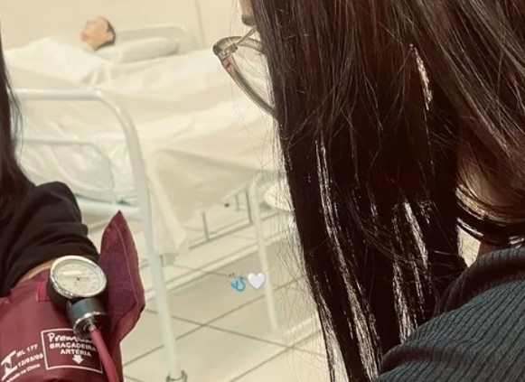

Para Mayara
Confesso que sou um cara meio ansioso cm voce e queria pedir desculpa em questao a isso, mas acho que você já deve ter percebido né kkkkkkkkkkkk. Mas eu só to fazendo isso pq eu sei o quanto você é uma menina esforçada e ocupada, e quero que saiba que estarei sempre aqui para o que precisar. Admiro muito a sua dedicação e também quero desejar toda a sorte do mundo nesse sonho tão lindo de se tornar enfermeira. Sei que o caminho não é fácil, mas não desista você é forte e vai conseguir chegar onde quiser. E tbm sei que hoje em dia muita gente da nossa idade não demonstra sentimentos, mas eu quero ser diferente. Quero que você sinta que pode contar comigo e que tem alguém que acredita em você de verdade. ah, e também desejo melhoras! Você comentou que não estava se sentindo muito benzinha e que até teve aquele sangramento no nariz… espero de coração que fique bem logo. Pelo menos que essa pequena surpresa consiga colocar um sorriso no seu rosto. E no final de tudo, mostrar que eu sempre vou torcer por você. 💖
que esta página seja um abraço quando eu não estiver por perto. E realmente sou meio doido msm eu acho kkkkkkkkkkkk